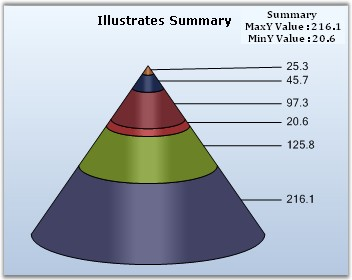

Provides access to summary information such as minimum/maximum values contained in this series at any given moment.
|
Details | |
|
Possible Values |
· MaxX - Returns the maximum X value. · MaxY - Returns the minimum Y value. · MinX - Returns the minimum X value. · MinY - Returns the minimum Y value. · ModelImpl - Returns the model implemented. · GetYPercentage - This method returns percentage value of series point in a Pie chart. |
|
Default Value |
· MaxX - 0 · MaxY - 0 · MinY - 0 · MinX - 0 · ModelImpl - Nil |
|
2D / 3D Limitations |
No |
|
Applies to Chart Element |
Any Series |
|
Applies to Chart Types |
All chart types |
Here is a sample code snippet using Radar chart.
|
[C#]
string str = this.chartControl1.Series[0].Summary.MaxY.ToString(); string str1 = this.chartControl1.Series[0].Summary.MinY.ToString(); label1.Text = "Summary" + "\n" + " MaxY Value : " + str + "\n" + "MinY Value : " + str1;
//To get percentage value of series point in Pie chart this.chartControl1.Series[0].Summary.GetYPercentage(1); this.chartControl1.Series[0].Summary.GetYPercentage(1, 0); |
|
[VB.NET]
Dim str As String = Me.chartControl1.Series(0).Summary.MaxY.ToString() Dim str1 As String = Me.chartControl1.Series(0).Summary.MinY.ToString() label1.Text = "Summary" + "" & Chr(10) & "" + " MaxY Value : " + str + "" & Chr(10) & "" + "MinY Value : " + str1
'To get percentage value of series point in Pie chart this.chartControl1.Series[0].Summary.GetYPercentage(1) this.chartControl1.Series[0].Summary.GetYPercentage(1, 0) |

Figure 213: Summary values displayed in Labels
See Also
Chart Types, How to find value, maximum value and minimum value among the data points